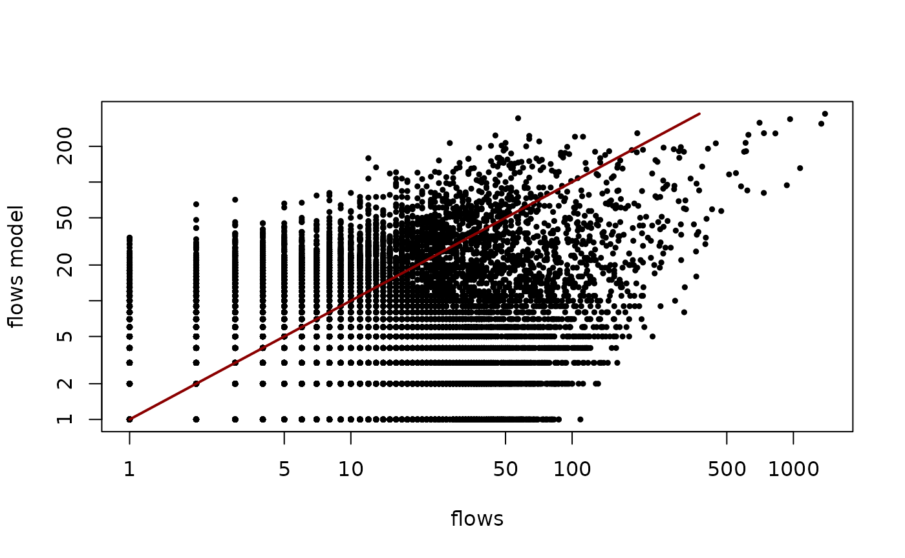
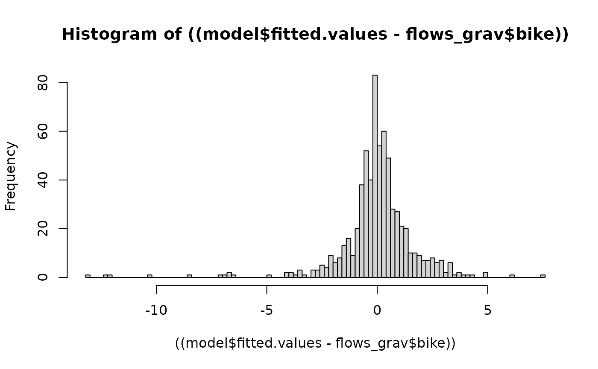

## OpenMP detected, parallel computations will be performed.##
## Attaching package: 'cppSim'## The following object is masked _by_ '.GlobalEnv':
##
## run_modelThis file will cover the process of building a local version of the gravity model used to predict cycling and/or walking flows across London.
What model to use ?
The general version of the doubly constrained gravity model looks the following way: where is the working population of the origin, and is the available workplaces at the destination location:
The terms , are factors for each location. The derivation of these factors is based on the relation:
with the derivation made from a recursive chain with initial values 1. Let’s refer to the parameters above as vectors ,,,, and to the cost function and flow as matrices F and T such that and is a flow from i to j.
# creating the O, D vectors.
O <- apply(flows_test, sum, MARGIN = 2) |> c()
D <- apply(flows_test, sum, MARGIN = 1) |> c()
F_c <- cost_function(distance_test,1,type = "exp")Next, we need to run the recursive procedure until the values stabilise. We introduce the threshold at which we will stop running the recursion . It corresponds to the rate of change of the parameter with respect to the previous iteration.
beta_calib <- foreach::foreach(i = 28:33
,.combine = rbind) %do% {
beta <- 0.1*(i - 1)
print(paste0("RUNNING MODEL FOR beta = ",beta))
run <- run_model(flows = flows_test
,distance = distance_test
,beta = beta
,type = "exp"
)
cbind(beta, run$r2,run$rmse)
}## [1] "RUNNING MODEL FOR beta = 2.7"
## [1] "cost function computed"
## [1] "calibration: over"
## [1] "model run: over"
## [1] "E_sor = 0.392146371104884"
## [1] "r2 = 0.314777655460119"
## [1] "RMSE = 22163551"
## [1] "RUNNING MODEL FOR beta = 2.8"
## [1] "cost function computed"
## [1] "calibration: over"
## [1] "model run: over"
## [1] "E_sor = 0.39249333259527"
## [1] "r2 = 0.314658641698322"
## [1] "RMSE = 22135915"
## [1] "RUNNING MODEL FOR beta = 2.9"
## [1] "cost function computed"
## [1] "calibration: over"
## [1] "model run: over"
## [1] "E_sor = 0.39273122700898"
## [1] "r2 = 0.314581076323428"
## [1] "RMSE = 22112582"
## [1] "RUNNING MODEL FOR beta = 3"
## [1] "cost function computed"
## [1] "calibration: over"
## [1] "model run: over"
## [1] "E_sor = 0.392611773609201"
## [1] "r2 = 0.314218919524871"
## [1] "RMSE = 22102764"
## [1] "RUNNING MODEL FOR beta = 3.1"
## [1] "cost function computed"
## [1] "calibration: over"
## [1] "model run: over"
## [1] "E_sor = 0.392377057376276"
## [1] "r2 = 0.313849972411283"
## [1] "RMSE = 22098059"
## [1] "RUNNING MODEL FOR beta = 3.2"
## [1] "cost function computed"
## [1] "calibration: over"
## [1] "model run: over"
## [1] "E_sor = 0.391924520987228"
## [1] "r2 = 0.313306091157044"
## [1] "RMSE = 22103251"
plot(beta_calib[,1]
,beta_calib[,2]
,xlab = "beta value"
,ylab = "quality of fit, r"
,main = "influence of beta on the goodness of fit"
,pch = 19
,cex = 0.5
,type = "b")
beta_best_fit <- beta_calib[which(beta_calib[,2] == max(beta_calib[,2])),1]
x <- seq_len(100)/20
plot(x
,exp(-beta_best_fit*x)
,main = "cost function"
,xlab = "distance, km"
,ylab = "decay factor"
,pch = 19
,cex = 0.5
,type = "l")
run_best_fit <- run_model(flows = flows_test
,distance = distance_test
,beta = beta_best_fit
,type = "exp"
)## [1] "cost function computed"
## [1] "calibration: over"
## [1] "model run: over"
## [1] "E_sor = 0.392146371104884"
## [1] "r2 = 0.314777655460119"
## [1] "RMSE = 22163551"
plot(seq_along(run_best_fit$calib)
,run_best_fit$calib
,xlab = "iteration"
,ylab = "error"
,main = "calibration of balancing factors"
,pch = 19
,cex = 0.5
,type = "b"
)
plot(flows_test
,run_best_fit$values
,ylab = "flows model"
,xlab = "flows"
,log = "xy"
,pch = 19
,cex = 0.5)
lines(seq_len(max(run_best_fit$values))
,seq_len(max(run_best_fit$values))
,col = "darkred"
,lwd = 2)
## MODEL USING THE GLM And POISSON DISTRIBUTION
# flows_london <- rlist::list.load("flows_london.rds")
data(flows_london)
flows_london <- flows_london
sample_od <- sample(unique(flows_london$workplace),100)
flows_grav <- flows_london[(workplace %in% sample_od) & (residence %in% sample_od),]
flows_grav[,O := sum(bike),by = from_id]
flows_grav[,D := sum(bike), by = to_id]
#
model <- glm(bike ~ workplace+residence+distance -1
,data = flows_grav
,family = poisson(link = "log")
)
((model$fitted.values - flows_grav$bike)) |> hist(breaks = 100)
r2 <- r_2(flows_grav$bike,model$fitted.values)
r2## [1] 0.8854178Support functions
print("cost function:")## [1] "cost function:"
cost_function## function (d, beta, type = "exp")
## {
## if (type == "exp") {
## exp(-beta * d)
## }
## else if (type == "pow") {
## d^(-beta)
## }
## else {
## print("provide a type of functino to compute")
## }
## }
## <bytecode: 0x56054c737c80>
print("calibration function:")## [1] "calibration function:"
calibration## function (cost_fun, O, D, delta = 0.05)
## {
## B <- rep_len(1, nrow(cost_fun))
## eps <- abs(sum(B))
## e <- NULL
## i <- 0
## while ((eps > delta) & (i < 50)) {
## A_new <- 1/(apply(cost_fun, function(x) sum(B * D * x),
## MARGIN = 1))
## B_new <- 1/(apply(cost_fun, function(x) sum(A_new * O *
## x), MARGIN = 2))
## eps <- abs(sum(B_new - B))
## e <- append(e, eps)
## A <- A_new
## B <- B_new
## i <- i + 1
## }
## list(A = A, B = B, e = e)
## }
## <bytecode: 0x56054b98d6f8>
print("model run")## [1] "model run"
run_model## function (flows, distance, beta = 0.25, type = "exp")
## {
## F_c <- cost_function(d = {
## {
## distance
## }
## }, beta = {
## {
## beta
## }
## }, type = type)
## print("cost function computed")
## O <- as.integer(apply(flows, sum, MARGIN = 1))
## D <- as.integer(apply(flows, sum, MARGIN = 2))
## A_B <- calibration(cost_fun = F_c, O = O, D = D, delta = 0.001)
## print("calibration: over")
## A <- A_B$A
## B <- A_B$B
## flows_model <- foreach(j = c(1:nrow(F_c)), .combine = rbind) %do%
## {
## round(A[j] * B * O[j] * D * F_c[j, ])
## }
## print("model run: over")
## e_sor <- as.numeric(e_sorensen(flows, flows_model))
## print(paste0("E_sor = ", e_sor))
## r2 <- as.numeric(r_2(flows_model, flows))
## print(paste0("r2 = ", r2))
## RMSE <- as.numeric(rmse(flows_model, flows))
## print(paste0("RMSE = ", RMSE))
## list(values = flows_model, r2 = r2, rmse = RMSE, calib = A_B$e,
## e_sor = e_sor)
## }
## <bytecode: 0x56054c43b080>